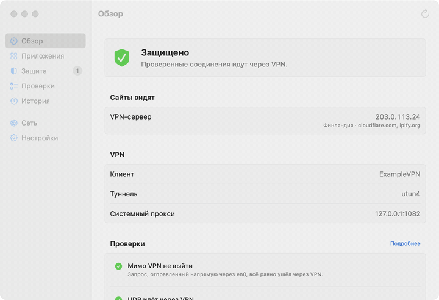
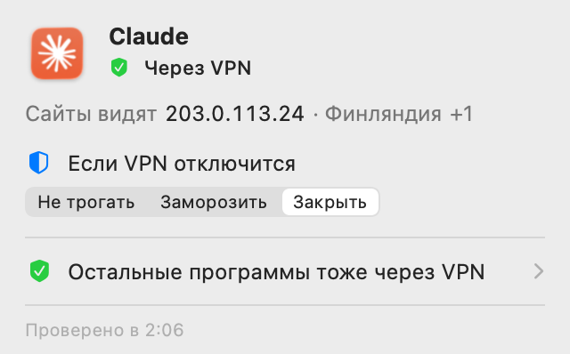

VPN оборвался на секунду, а программы уже вышли в сеть с вашим настоящим адресом
VPN Lens следит за VPN и за программами, которые вы выбрали. Если соединение с VPN пропадает, он сразу замораживает или закрывает эти программы. Когда VPN вернётся, замороженные программы продолжат работу сами.

Защита при обрыве
Выберите программы, которые никогда не должны выходить в сеть без VPN, и что с ними делать: заморозить или закрыть. Выбор запоминается для каждой программы.
Видно, кто как ходит в сеть
Через VPN, мимо него или частично мимо, и какой адрес видят сайты. Для активной программы в меню, для всех сразу в окне.
Проверка утечек
Обход туннеля, WebRTC, IPv6 и DNS. Красным помечается только то, что подтвердил замер.
Защита срабатывает по системному событию об обрыве, сама заморозка занимает микросекунды. Но это не сетевой фильтр: пока событие доходит, что-то может успеть уйти. Для дополнительной защиты включите и kill switch самого VPN-клиента.
Всегда под рукой

Щит в строке меню показывает общий итог. Клик по нему - сводка по программе, с которой вы работаете: через VPN ли она ходит, какой адрес видят сайты и что с ней делать, если VPN отключится. Уведомления приходят, когда VPN отключился, а программы продолжили работать.
Установка
- Установите через Homebrew командой выше или скачайте архив из релизов и перенесите «VPN Lens» в «Программы».
- Приложение не нотаризовано Apple, поэтому при первом запуске macOS его заблокирует. Откройте «Системные настройки → Конфиденциальность и безопасность» и нажмите «Открыть всё равно» напротив VPN Lens. Это нужно один раз.
- Дальше VPN Lens живёт в строке меню. Запуск при входе, язык и горячая клавиша - в настройках.
Приватность
Телеметрии нет. Данные о программах и соединениях не покидают Mac. Чтобы узнать ваш внешний адрес и проверить сеть, VPN Lens отправляет запросы проверочным сервисам, например cloudflare.com и ipify.org. Все сетевые проверки выключаются одним переключателем. Куда именно, когда и что видит каждый сервис, а также что хранится на Mac, - в README.
Открытый код
Ядро на Rust, интерфейс на SwiftUI, лицензия MIT. Как устроены проверки и почему соединение через Wi-Fi ещё не значит, что трафик идёт мимо VPN, - в описании устройства.